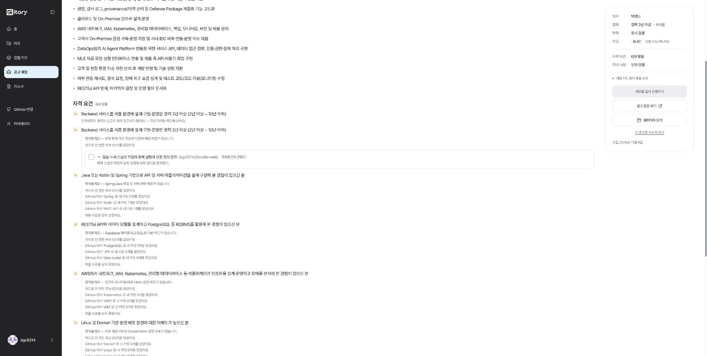

GITORY · 최종 기술멘토링 · 2026-11-04
데이터가 비워진 상태에서 심사위원과 똑같은 동선으로 처음부터 끝까지 돌렸습니다.
develop e2180b8 · PR #485 머지됨(732커밋 · 1,155파일 · +93,080)
코드 마감 11/6(금) — 이틀 · 제출 11/11(화) · 발표 11/12(수)
온보딩 → 레포 분석 → 카드 → 매칭 3단계 → 자소서 초안까지 끊기지 않고 끝까지 돕니다.
10/25에 남은 숙제였던 자소서 연결·Agentic 장면·매칭 필터가 전부 들어왔습니다.
Agentic은 매칭이 아니라 스스로 찾아보기 에서 완성됐습니다. AI가 조건마다 검색어를 스스로 만들어 GitHub 을 뒤집니다. 제가 10/31에 제안한 것보다 나갔습니다.
다만 심사 동선을 그대로 막는 버그가 하나 있습니다. 카드를 만든 직후 공고 매칭에 들어가면 "확정한 카드가 없어요"가 뜹니다. 새로고침해야 풀립니다.
같은 시점의 API 응답입니다.
GET /api/cards → 3장 모두 status: "CONFIRMED", STAR 4칸 FILLED
GET /api/matches/summary → { matchedPostings: 6 }
화면 → "확정한 카드가 없어요"
심사위원이 쓰는 순서 그대로입니다. 여기서 막히면 ② 전체 매칭을 한 번도 못 써보고 넘어갑니다. 서비스에서 제일 공들인 부분인데요.
공고 상세에서 [이 공고와 맞춰 보기] 를 누르면 못 채운 조건마다 AI가 움직입니다.

✗ Java 또는 Kotlin 및 Spring 기반으로 API 를 설계·구현해 본 경험 찾아볼게요 — Spring·Java 학습 및 서버 관련 레포가 있습니다 카드로 안 만든 후보 63개를 읽었어요 GitHub 에서 'Spring' 로 내 커밋 0개를 찾았어요 GitHub 에서 'Kotlin' 로 내 커밋 1개를 찾았어요 GitHub 에서 'REST API' 로 내 커밋 1개를 찾았어요 쓸 만한 자료를 찾지 못했어요. ✗ Backend 서비스를 제품 환경에 설계·구현·운영한 경력 2년 이상 찾아볼게요 — 운영 환경 개선 후보와 인프라·배포 레포가 있습니다 ☐ 일일 시세 스냅샷 작업의 중복 실행과 요청 정지 방지 [후보로 카드 만들기]
| 피클 | Gitory 스스로 찾아보기 | |
|---|---|---|
| 목표만 준다 | "장바구니 결제해줘" | "이 공고와 맞춰 보기" 한 번 |
| 경로를 짠다 | 사이트 → 장바구니 → 결제창 | 조건마다 찾을지 말지 판단 + 검색어 생성 |
| 도구를 쓴다 | 웹사이트·전화 | 후보 63개 읽기 → GitHub 커밋 검색 |
| 막히면 보고 | "상품 2건만?" | "쓸 만한 자료를 찾지 못했어요" |
| 예산·멈춤 | 결제 직전 정지 | 최대 5개 조건만 — 나머지는 ✗ 만 |
| 결과 보고 | "리뷰 9건, 6,000원" | "제안 1개, 찾지 못한 4개" |
매칭 top 3 은 알고리즘이고, 에이전트는 여기 있습니다.
제가 10/31에 "못 찾으면 근거 커밋을 한 번 더 뒤져보게 하세요" 라고 했는데, GitHub 전체 커밋 검색까지 나갔습니다. 그리고 찾은 걸 바로 "후보로 카드 만들기" 로 이어 줍니다.
계정 데이터가 비워진 상태라 심사위원과 똑같은 첫 사용 경험을 돌렸습니다.
| 단계 | 확인한 것 | 시간 |
|---|---|---|
| 인적사항 온보딩 | 5단계(관심분야 → 경력 → 학력 → 어학 → 자격증) · 각 단계에 "없음" 건너뛰기 | 1분 |
| 홈 대시보드 | 캘린더(일정 등록) · 추천 공고 · 커리어 활동 히트맵 · 지표 4개 | — |
| 레포 목록 | 53개 · AI 한 줄 설명("PR 없이 커밋 69개를 올린 레포라 커밋을 묶어 후보를 만들어요") · 내 기여 많은 레포 그룹 | — |
| 분석 | 4단계 · 읽고 있는 커밋 제목이 실시간으로 흐름 · "커밋 읽기 9/195 → 196개" | 3분 30초 (안내는 130초) |
| 후보 보드 | 66개 중 "먼저 카드로 만들어 볼 경험" 5개 + 나머지 접기 | — |
| 카드 초안 | 3장 · STAR 칸마다 "쓰는 중/완료" 가 실시간으로 바뀜 · 자동 확정 | 1분 30초 |
| ① 레포 추천 | 카드 만들자마자 기업 3곳 + 로고 + "JavaScript, React, 필수 1개·우대 1개 맞음" | 즉시 |
| ② 전체 매칭 | 600건 → 9곳으로 줄이고 그것만 AI 판정 · "공고 9곳 중 4곳 확인했어요" | 40초 |
| ③ 공고 상세 | 등급 없음 · ✓/✗ + 근거 카드 + "경력 2년 이상 · 모자람"(인적사항 대조) | 50초 |
| 스스로 찾아보기 | 조건 5개에 대해 후보 63개 + GitHub 검색 · 제안 1개 | 포함 |
| 자소서 | 문항 → AI 카드 고르기 → 공고의 모자란 조건을 질문 → 초안 | 2분 |
내 카드로 맞춰 본 공고 5곳
11월 4일 · 확정 카드 3장과 인적사항으로 기술이 겹치는 공고 9곳을 확인했어요
1 엑셈 Golang 개발자 채용 필수 4개 중 3개 맞아요
⚠ Go 경험이 아직 없어요
2 이스트소프트 [ESTgames] 웹 개발자 필수 9개 중 5개 맞아요
⚠ CS 기본 지식… 등 4개가 아직 없어요
3 인터엑스 풀스택 개발자 인턴 필수 5개 중 2개 맞아요
등급 A~D 를 빼고 "4개 중 3개 + 뭐가 없는지" 로 바꾼 것 — 11/1에 답하신 그대로입니다. 모자란 걸 빨간 글씨로 명시해서 사용자가 스스로 판단할 수 있습니다.
조금만 더 알려 주세요 카드에 없는 것만 물어요. 아는 만큼 답하고, 모르면 넘겨도 돼요. Stocklio에서 백엔드 서비스 설계·구현·운영 2년 이상 조건과 이어지는 경험이나 지금 배우는 것이 있나요? [지원 직무와 이어지는 점]
③ 에서 ✗ 였던 조건이 그대로 질문이 됐습니다. 카드 고르기 단계의 이유에도 "공고의 인증·인가 조건도 채움" 이 들어갑니다. 10/25 숙제(#433)의 완성입니다.
| 남기신 것 | 지금 |
|---|---|
| ① 진행 중인지 멈춘 건지 모르겠다 "가짜로라도 1/33 → 2/33" | ✅ 실제 읽는 커밋 제목이 흐릅니다. 가짜가 아니라 스트리밍으로 |
| ② 재시도 못 하는데 버튼 보임 | ✅ 서버 retryable 로만 판단 |
| ③ "사용됨 보이기" 이해 안 됨 | ✅ 제거 + mentor-feedback-ux.test.tsx 로 고정 |
| ④ 분석 실패 알림 "한 번만 나도 바로 받으면 좋겠다" | ❌ 아직 없음 — 백엔드에 webhook·notify 코드 0건 |
| ⑤ STAR 를 다 직접 입력해야 함 | ✅ AI 가 4칸 작성 + 실시간 표시 + 자동 확정 |
| 항목 | 지금 |
|---|---|
| 자소서까지 연결 (#433) | ✅ 완성 — 공고 id 가 넘어가고 모자란 조건이 질문이 됨 |
| Agentic 장면 드러내기 (#430) | ✅ 완성 — 분석 실시간 + 카드 실시간 + 스스로 찾아보기 |
| 매칭 속도·필터·관심 직무 (#434·#435) | ✅ 완성 — 관심 분야 + 인적사항 거르기 + 누를 때만 계산 |
| 인라인 | 지금 |
|---|---|
| ① 되묻기에 칸이 약한 이유 넘기기 | ✅ 반영 + 측정까지(수치를 짚어 묻기 8/10 → 10/10) |
| ③ 상세에서도 등급 빼기 | ✅ 반영 — fit: null 확인 |
② found/missing 빈 배열 | ❌ List.of(), List.of() 그대로 |
⑤ JobErrorCode.catch | ❌ .catch 0건 |
②⑤ 는 11/3까지 하겠다고 하셨던 것입니다.
특히 ⑤ 는 오류 코드를 하나 더 넣는 순간 화면이 멈추는 거라, 발표 전에 터지면 손쓸 데가 없습니다.
z.enum([...]).catch('INTERNAL_ERROR') 한 줄입니다.
| # | 문제 | 왜 중요한가 |
|---|---|---|
| 1 | 화면 전환 시 갱신 안 됨 — 카드 생성 → 공고 매칭에서 "확정한 카드가 없어요" | 심사 동선 그대로 막습니다. §1 |
| 2 | 진행 표시 구멍 — "후보로 추리기"가 1분 30초 동안 0/191 |
앞뒤 단계는 실시간인데 제일 오래 걸리는 데만 없습니다. 6주차에 지적한 그 문제가 여기 남아 있습니다 |
| 3 | 예상 시간 — 안내 "약 130초" → 실제 3분 30초 | 기다리는 사람이 가장 먼저 의심하게 됩니다 |
| 4 | 조건 중복 — 같은 조건이 두 줄인데 하나는 "경력 짧음", 하나는 "찾아볼게요"로 다르게 판정 | 조건 추출에서 중복 제거가 안 됩니다. 심사 중 눈에 띄기 쉽습니다 |
| 5 | 경력 필터 없음 — 신입으로 넣었는데 백엔드 159건에 경력 10년·8년차 공고 그대로 | 매칭 결과에선 걸러지는데 둘러보기 목록에는 필터가 직무뿐입니다 |
| 6 | 자소서 고쳐쓰기가 회사명을 지움 — 첫 초안엔 "에스아이에이·OVISION Int" 가 들어갔는데 "다시 쓰는 중" 뒤에 빠짐 | 검사기가 공고에서 온 고유명사도 근거 없음으로 보는 듯합니다. 지원 동기 문항의 값이 깎입니다 |
이틀 안에 고른다면 1 → ⑤(.catch) → 2 순서입니다. 1은 심사를 막고, ⑤는 배포 사고를 막고, 2는 제일 길게 기다리는 구간이라서요.
| 제출물 | 상태 | |
|---|---|---|
| 1 | 배포 서비스 URL | URL 은 있음(3-37-14-211.sslip.io).⚠ "테스트 계정과 샘플 데이터" 가 없습니다 — GitHub 로그인만 되고, 심사위원이 자기 레포를 직접 분석해야 데이터가 생깁니다. 오늘 재어 보니 처음부터 끝까지 10분 이상 걸립니다 |
| 2 | 시연 영상 (5분 내외) | ❌ 없음. "에이전트가 스스로 판단하고 움직이는 장면이 드러나게" → 스스로 찾아보기 화면이 정답입니다 |
| 3 | 발표 자료 (최대 10분) | ❌ 없음. 항목 중 "비슷한 서비스와 견준 차별점"·"사업성과 시장성" 은 지금 저장소 어디에도 정리된 게 없습니다 |
| 4 | GitHub 저장소 | ✅ README 9KB(소개·화면·기능 5개·아키텍처·AI 파이프라인·기술스택) · 테스트 432파일(BE 227 · FE 148 · AI 57) · CI/CD 워크플로 9개 |
| 5 | 기술문서(테크스펙) | 16.5KB · 11개 섹션. 리스크·실패 화면·트레이드오프·테스트 전략·지표 퍼널까지 구조는 좋습니다. ⚠ 다만 내용이 2주 전입니다 — 스스로 찾아보기 · 매칭 3단계 · 자소서 · 인적사항 · 고쳐쓰기 루프가 하나도 안 적혀 있고, "되묻기 상한 3번 🟡 늘리기 검토"·"10/27~ 기능 동결" 처럼 틀린 줄이 남아 있습니다. 요구 항목 중 "에이전트 설계(단계·도구·상태·예외)" 전용 절이 없습니다 |
| 6 | 협업문서 | ✅ CONTRIBUTING.md 11.4KB · 12개 절(그라운드룰·브랜치·커밋·이슈·PR·리뷰·시험·계약) |
제출물에서 제일 위험한 건 5번입니다. 「기술 평가의 근거가 됩니다」 라고 명시된 문서인데, 이번 2주에 만든 것이 거의 안 들어가 있습니다. 특히 스스로 찾아보기 은 Agentic 평가의 핵심인데 테크스펙에 한 줄도 없습니다.
1번도 같이 생각해보셔야 합니다.
"접속해서 핵심 기능을 처음부터 끝까지 써볼 수 있어야 합니다" 인데 10분이 걸립니다.
심사위원이 중간에 그만두면 스스로 찾아보기 까지 못 갑니다.
→ 이미 분석이 끝난 데모 계정을 하나 만들어 두고 제출 때 같이 적으시거나,
작은 레포를 추천 1순위로 올려 두는 식의 장치가 필요해 보입니다.
| 무엇 | 왜 | |
|---|---|---|
| 1번 | 스스로 찾아보기 | 목표 → 판단 → GitHub 검색 → 보고 → 다음 행동 제안이 한 화면에 다 보입니다 |
| 2번 | 카드 고쳐쓰기 루프 (#537) | OPEN/REWRITE/KEEP 중 AI 가 고르고 이슈·리뷰를 실제로 엽니다 |
| 3번 | 되묻기 루프 | AI 가 다음 칸을 고르고 스스로 끝냅니다 |
| 4번 | 매칭 top 3 | 알고리즘입니다. 앞에 꺼내면 "AI 가 정렬했다" 로 들립니다 |
fix: change to dockerfile → AI 요약 "Procfile 과 Nixpacks 를 제거하고…"| 무엇을 | 어떻게 |
|---|---|
| 저장소 상태 | worktree 를 origin/develop(e2180b8)로 새로 만들어 대조 |
| PR #485 | gh api — merged, 732커밋 / 1,155파일 / +93,080 |
| 인라인 4건 | 현재 develop 에서 grep 으로 각 줄 직접 확인 |
| 전 구간 실행 | 데이터가 빈 계정으로 온보딩 → 레포 분석 → 카드 3장 → ①②③ 매칭 → 스스로 찾아보기 → 자소서 초안 완주 |
| 버그 재현 | 화면 표시와 /api/cards·/api/matches/summary 응답을 같은 시점에 대조 |
| 매칭 3단계 | RepoRecommendationController · OverallRecommendationController ·
/api/matches/{id}/judgement · /gap-fill API 설명 확인 |
| 제출물 6종 | README · tech-spec.md · CONTRIBUTING.md 절 구성과 내용, 워크플로·테스트 파일 수 |
| 소요 시간 | 화면의 경과 표시로 단계마다 기록 |
조사 대상 저장소에는 아무것도 쓰지 않았습니다. 읽기 전용 worktree + 멘토 본인 계정 화면 조작만 했습니다. 운영에 남긴 것은 Stocklio-web 카드 3장과 자소서 1편입니다.